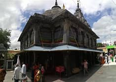

A city of ancient historical and mythological significance, Gaya is one of the main tourist attractions in Bihar and the second largest city in the state. It is 100 km from Patna, the capital of Bihar and one of the major pilgrimage sites for Hindus and Buddhists. Its natural surroundings, narrow by lanes and its age old buildings make it special. DO SEE Photos of Bodh Gaya: These Images of Bihar’s Prime Pilgrim Spot Will Tempt You Visit It Gaya derives its name from Gayasur, a mythological demon. Legends say that Gaya served rigid penance and secured blessings from Lord Vishnu, after which his body transformed into the rocky hills, which now form the landscape of Gaya. People following Jainism, Hinduism and Buddhism form the major population of Gaya. Hindus consider Gaya to be the place for attaining salvation. Hence, they perform pindadaan (funeral offerings of the deceased) here. Gaya is an important site for Jains as it is home to numerous Jain temples. Gaya is important for Buddhists as Buddha preached the Fire Sermon at Brahmayoni Hill, which was earlier called Gayasisa.
